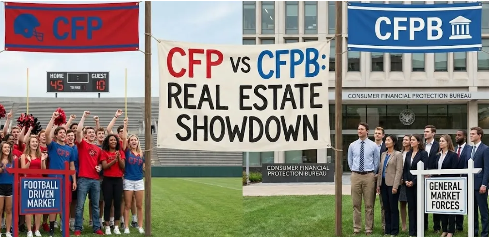

[PUBLISHED]
Which Raises Prices More: The CFPB or the CFB?
Market Analytics | Real Estate Valuation
An analytical deep dive into local market dynamics, investigating the quantitative correlation between collegiate athletic success—specifically an Ole Miss College Football Playoff trajectory—and localized real estate valuation shifts in Oxford, MS.
Read Analysis →